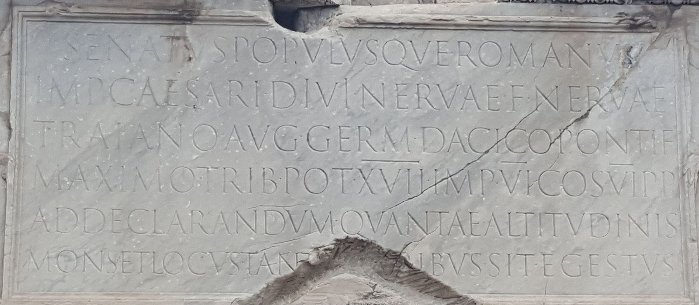
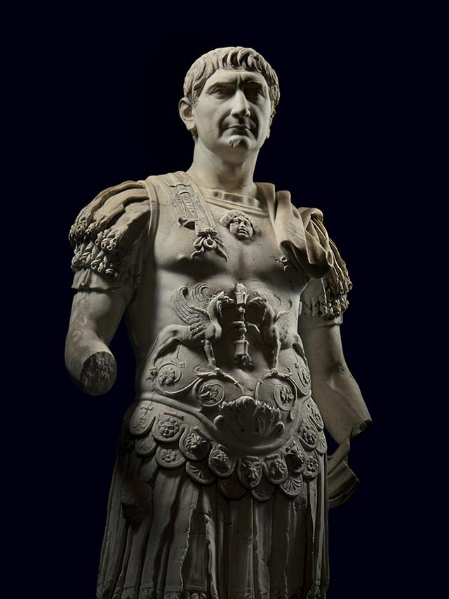

Romans carved as few letters as they could.
Raising the column…

The inscription ·
Read the stone

Optimus Princeps
His name
An emperor’s official name grew with every victory and office.
The empire at its height
Eutropius says Trajan spread the empire’s bounds longe lateque. His reign, and the works he built across it.
AD 98
Empire in AD 98
Added by Trajan
Given up
Building work
In their own words
What the Romans wrote about Trajan and his column.
Cassius Dio
A Roman senator from Bithynia, Dio wrote his history in Greek a century after Trajan. These passages are from Earnest Cary’s translation (1925).